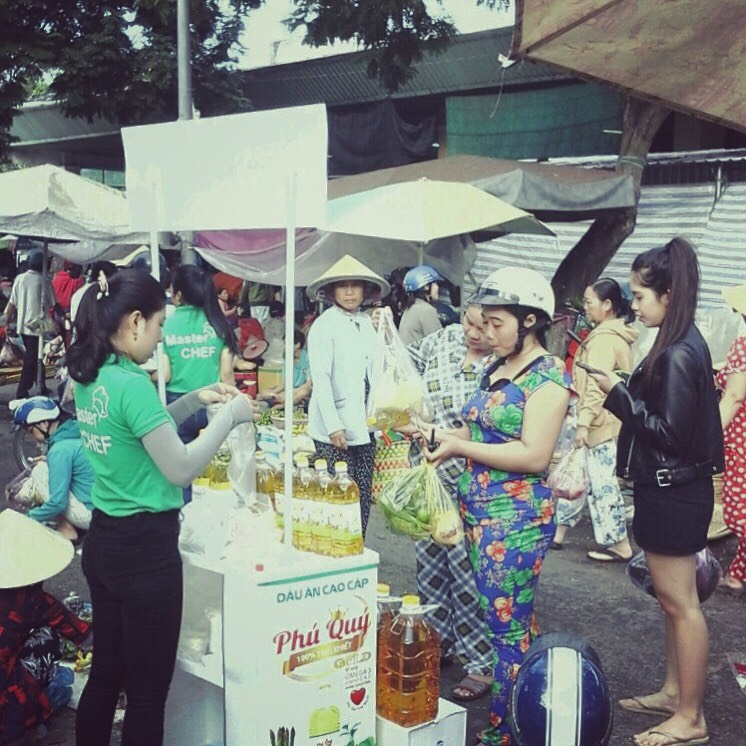

Milton Long Hậu’s new line of products was well-received in the Southwest provinces.
Milton Long Hậu’s new line of products was well-received in the Southwest provinces, attracting attention when in display at various markets.
The usual scene at the Southwest markets on the last few days of August was disrupted by the appearance of clean and colorful shelves at several vantage points. Customers were reportedly seen receiving samples of Milton products, which is famous for being the largest soybean oil processing company in Southeast Asia. Visiting Vietnam this time, Milton introduced 2 high quality products: Phu Quy premium cooking oil and Master Chef soybean oil.

Master Chef soybean oil’s main attraction is that it is made from 100% refined soybean extract, which proves helpful to keep your dishes fresh with attractive flavor. It also keeps your fried dishes from being discolored, too oily after repeated frying, retaining the original flavor. Moreover, Master Chef soybean oil is also a nutritious source of Vitamin E, A, D, and Omega-3. Most notable is the fact that Master Chef soybean oil is 100% cholesterol free, which makes it friendly to your liver and your heart.
Phu Quy high quality cooking oil is another quality product of Milton Company. Its prowess lies in the oil’s capability to maintain the reasonable temperature while frying, preventing the amount of oil from being overly evaporated, as well as limiting the commonly known habit of oil-splattering or popping uncontrollably while frying at high heat. This feature makes Phu Quy high quality cooking oil a safe bet for inexperienced housewives as well as skillful chef who cooking safety is the kitchen’s highest priority. Like its partner, Phu Quy high quality cooking oil is rich with Vitamin E, A, D and Omega-3, completely free of cholesterol and other harmful component; a cooking oil that actually keeps the doctor away.
Milton’s two spearhead products for Vietnam market: Master Chef soybean oil and Phu Quy high quality cooking oil, both received very positive feedbacks from customers. Mr Kiet (currently residing in Hong Ngu town, Dong Thap province) was impressed by the high nutritional value of both products; he was also pleased with the design and packaging, which is to him is friendly and attractive. Ms Tam (Cho Moi district, An Giang province) was fascinated by Phu Quy cooking oil’s capability to maintain the reasonable temperature while deep frying; she felt reassured when introducing to the safety feature, admitting her worse fear is catching burn from splattering oil, which guarantee to be limited when using Phu Quy high quality oil and Master Chef soybean oil.
It is certainly to the Milton’s delight to receive such positive feedbacks. Our reports showed that most customer were appreciative of Phu Quy’s heat resistance capability as well as color preserving capability. Master Chef soybean oil got on the customer good books by its capability to preserve flavor, preventing the dishes from turning spoiled and greasy after several frying. Made from 100% refined soybean, high nutrition and zero cholesterol, both Phu Quy high quality oil and Master Chef soybean oil have successfully convinced even the most demanding customers, which speaks volume to Milton Long Hậu reputation as the leader of vegetable oil suppliers in Vietnam.